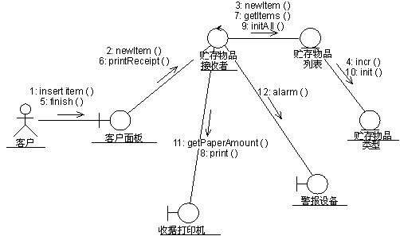

| 指南：通信图 |
 |
|
简介
通信图用于显示对象如何交互以执行特定用例或用例中某一部分的行为。设计者使用通信图和时序图来定义和阐明对象角色，这些对象执行特定的用例事件流。它们是用于确定类职责和接口的主要信息源。 与时序图不同，通信图显示了对象之间的关系。时序图和通信图表述相似的信息，但显示的方式不同。 通信图显示了对象之间的关系，它更有利于理解对给定对象的所有影响，也更适合过程设计。 通信图的格式决定了它们更适合在分析任务（请参阅任务：用例分析）中使用。特别地，它们更适用于描述较少量对象的较简单交互。当对象和消息数量增加时，该图将变得越来越难以阅读。另外，很难显示附加的描述信息（例如计时、决策点），或其他可以方便地添加到时序图的注释中去的非结构化信息。 通信图的内容通信图中可以有对象和参与者实例，以及链接和消息（描述是它们是如何相关和交互的）。该图按照各对象如何通过互相发送消息进行通信，描述在参与的各对象中发生的事情。可以为用例的事件流的每个变体制作一个通信图。  描述回收机器系统中用例接收寄存项的部分事件流的通信图。 对象使用对象符号来表示对象，该符号显示了冒号分隔的对象名称及其类（有下划线）： 对象名：类名 可以用以下方式使用通信图中的对象：
参与者通常在通信图中存在参与者实例，作为交互的调用者。如果在同一图中有多个参与者实例，则应尝试在该图的外围保留它们。 链接链接定义如下：
消息消息是对象之间的通信，它传送信息，期望在这些信息之后将发生某些活动。在通信图中，消息显示为在链接附近的标注箭头。这表示该链接用于向目标对象传输消息，或以其他方式实施向目标对象传递消息。箭头沿链接指向目标对象方向（接收消息的对象）。该箭头是用消息的名称及其参数来标注的。为了显示消息在整个交互中的顺序，还可以用序号来标记消息箭头。通常在通信图中使用序号，因为序号是描述消息的相对顺序的唯一方法。 可以取消分配一个消息，表示其名称是一个临时字符串，描述了该消息的全部意义。可以稍后通过指定消息的目标对象的操作来分配消息。然后指定的操作将替换该消息的名称。 |
© Copyright IBM Corp. 1987, 2006. All Rights Reserved. |